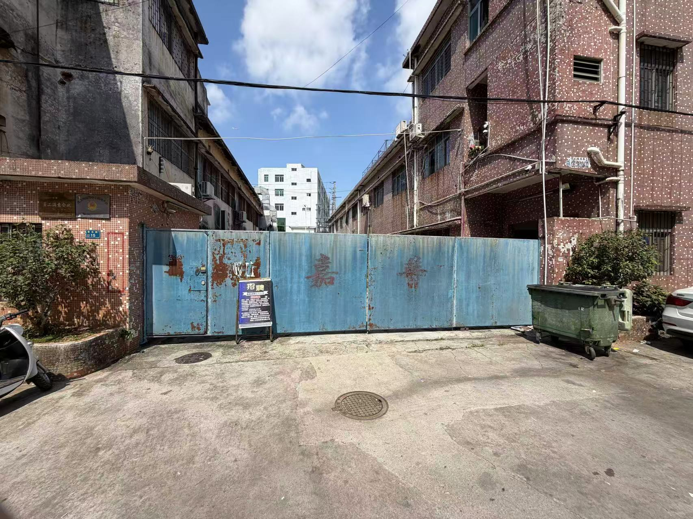
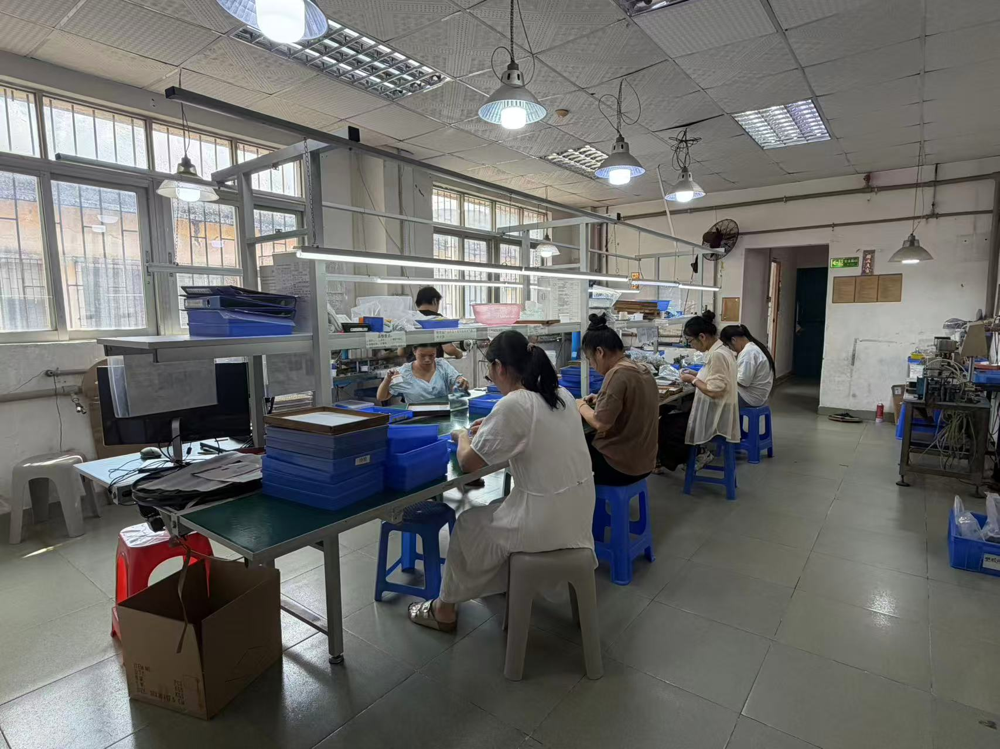
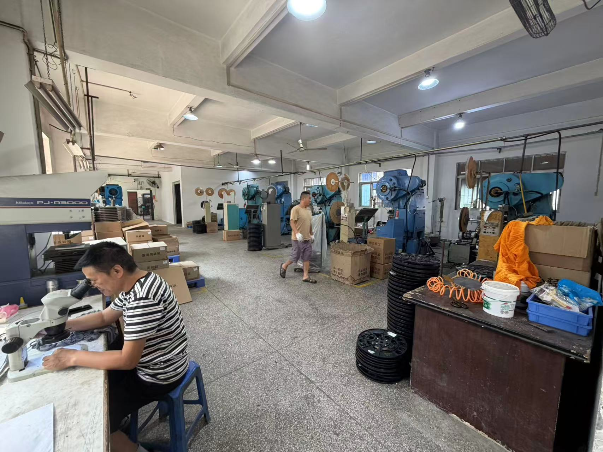
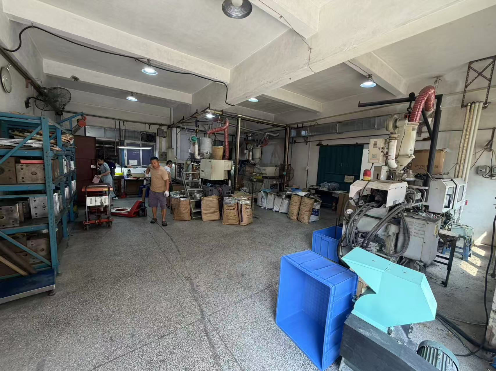
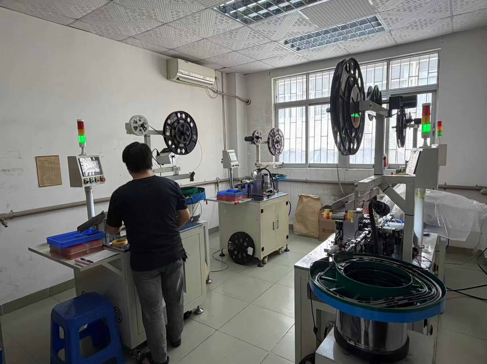
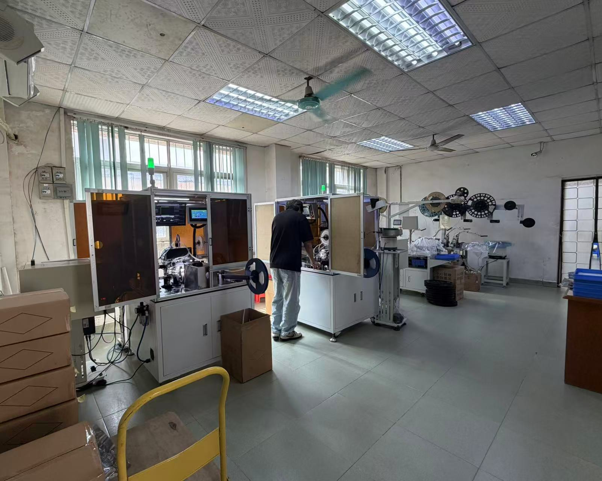

東莞市嘉訊科電子科技有限公司，致力於為全球電子製造業提供超高傳輸效率、高可靠性的微型化板對板連接解決方案。
東莞市嘉訊科電子科技有限公司位於電子製造重鎮廣東省東莞市長安鎮，深耕精密電子連接器產業超過 25 年台資企業。公司前身為「嘉普」，歷經多年產業發展與技術累積，現以「嘉訊科」品牌持續投入電子連接器的研發、製造與銷售，憑藉長期累積的製造經驗與完整的生產能力，為客戶提供高品質、高可靠度的連接器產品與專業服務。
嘉訊科專注於 BTB（Board-to-Board，板對板）連接器 的研發與製造，主力產品涵蓋單槽、雙槽及 0.5mm、0.8mm 間距 等高密度板對板連接器，產品廣泛應用於智慧終端、工業控制、消費電子、車載電子及通訊設備等領域。
公司具備完整的自主製造能力，從精密金屬端子、塑膠射出成型，到連接器成品組裝，主要生產製程均由公司自主完成。透過端子沖壓、塑膠成型、產品組裝及自動化生產等完整製程，公司能有效掌握產品品質與生產效率，並快速配合客戶進行產品開發、規格調整及量產需求。
自嘉普時期開始，公司已累積超過 25 年的連接器製造經驗，在產品結構、生產工藝、模具配合、材料應用及量產管理等方面建立深厚的技術基礎。面對電子產品輕薄化、高密度及高可靠度的發展趨勢，嘉訊科持續投入自動化設備、製程改善與產品技術開發，不斷提升產品品質與製造效率。
嘉訊科始終以「高精度、高穩定、高效率、快速響應」為核心，從產品設計、生產製造到品質管理，嚴格控制各項製程品質，致力於提供穩定可靠的電子連接器產品，並以專業技術、完整製造能力及快速服務，與客戶建立長期穩定的合作關係。
未來，嘉訊科將持續深耕精密電子連接器領域，以超過 25 年的產業經驗與自主製造能力為基礎，持續拓展高密度、高精度及高可靠度連接器產品，提升研發與製造能力，為全球客戶提供更具競爭力的產品與服務。






擁有高精密的模具加工設備與頂尖工程團隊，實現從模具設計、加工到組裝的全流程自主控管，確保產品高重複精度。
全面導入自動化插針與組裝設備，結合高精度 CCD 自動光學檢測，嚴格把關 Pin 數平整度與接觸穩定性，產能穩定充足。
建立完善的品質管理體系，從進料檢驗（IQC）、製程檢驗（IPQC）到成品出貨檢驗（OQC），實施全程嚴格把關。
針對客戶不同的 PCB 佈局與合高需求，提供豐富的端子組合與客製化開模能力，大幅縮短客戶產品研發週期。
根據客戶的Pin 數、間距與合高需求，進行精準的結構模擬與圖紙確認。
採用高精度加工設備開發沖壓與注塑模具，快速提供初版樣品供客戶進行 PCB 板級測試。
採用高品質銅合金與耐高溫工程塑料，經高速沖壓與精密注塑成型，確保端子導電性與塑膠件耐熱性。
全自動組裝線搭配 CCD 影像檢測系統，100% 檢查腳位共面度（Coplanarity）與外觀缺陷，確保零瑕疵出廠。